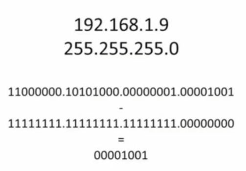

Purpose of IP addressing.
Well somehow Bryan has gotten the server’s IP address (either in IPv4 or IPv6 format).
IP addresses are the location of the PC or server, identified as both network location and host location within that network.
IP addressing provides a logical addressing scheme for our computers so that they can communicate on networks.
Being logical means that an IP address can be changed with minimal fuss at any time, unlike a MAC (media access control) address, which is physically embedded into devices.
IPv4 address properties.
As IPV4 is made up of a 32bit binary number, there are 2^32 possible address combinations.
That’s 4,294,967,296 possible combinations.
With all of these possibilities, a process needed to be developed to keep everything neat and tidy and, most of all, findable. The implementation of the subnet mask was the answer.
Initial properties of IPv4.
32-bit binary number.
Divided into four sets of eight (called octets) that are separated by periods (each octet is 8 bits, which is equal to one byte). format.
Represented in human friendly format by a dotted decimal(十进制) format.
Requires the use of a mask to determine which portion defines the network and which portion defines the node. This is called the subnet mask
The subnet mask has the same format as the IP address (32bits and represented in dotted decimal format).
Interaction of IP address and subnet mask.
192.168.1.9
255.255.255.0
192.168.1.9 = the IP address.
255.255.255.0 = the subnet mask.

Deconstructing the IP address.
First octet =11000000 = 192
Second octet =10101000= 168
Third octet=00000001=1
Fourth octet =00001001 =9
Subnet mask characteristics.
Anything other than a 0 defines the network address.
Network address.
The network address = 192.168.1
Node address.
The node address = 9
Classes of IPv4 addresses.
Internet Protocol v.4 (IPv4) is a binary addressing scheme that is used for networking. It was finalized as a standard in 1981.
IPv4 is a common network addressing scheme that is deployed today.
There is an issue though Because of its structure and the growth in popularity of the Internet, most of the world has run out of assignable IPv4 addresses.
Thanks to some forethought though, it is still a valid scheme.
Class A network address.
- Address range = 0 to 127 in the first octet 0.0.0.0 to 127.255.255.255
- Binary representation=0xxxxxxx.
- Node addresses available = 16,777,214
- Subnet mask= 255.0.0.0
Class B network address.
- Address range = 128 to 191 in the first octet. 128.0.0.0 to 191.255.255.255
- Binary representation = 10xxxxxx
- Node addresses available =65,534
- Subnet mask = 255.255.0.0
Class C network address.
- Address range = 192 to 223 in the first octet. 192.0.0.0 to 223.255.255.255
- Binary representation = 110xxxxx
- Node addresses available = 254
- Subnet mask=255.255.255.0
Class D network address.
- Address range = 224 to 239 in the first octet. 224.0.0.0 to 239.255.255.255
- Binary representation= 1110xxxx
- Subnet mask = not defined.
- Used for multicast communication.
Automatic Private IP Addressing (APIPA).
- In some, cases the Dynamic Host Configuration Protocol (DHCP) process may fail, in these cases, a node will self configure an APIPA address.
- Address range = 168.254 in the first octet.
Public IP addresses.
- Routable.
- Each must be unique. (For any of you “Highlander” fans out there, remember: “There can only be one.”)
- Not flexible; you are assigned to your network space.
Private IP addresses.
- Non-routable
- 10.0.0.0 to 10.255.255.255 (1 Class A license).
- 172.16.0.0 to 172.31.255.255 (16 Class B licenses).
- 192.168.0.0 to 192.168.255.255 (256 Class C licenses).
- Highly flexible, you assign the network space.
Classless IPv4 addressing.
Classes of addresses limited flexibility.
- First routing protocols required the class structure.
Classless addressing.
- Classless Inter-Domain Routing (CIDR).
- Slow the growth of routing tables.
- Slow the exhaustion of IPv4 addresses.
- Create more flexibility.
- The subnet mask becomes fluid.
- Does not affect the private address space ranges.
- Subnetting is now possible and desirable.
CIDR notation.
192.168.0.9 255 255 255.0 becomes 192 168.0.9/24
192.168.128.0/23 = subnet mask of 255.255.128.0
Network = 192.168.128.0
Host range = 192.168.128.1 to 192.168.129.254 (512)
Broadcast address = 192.168.129.255s
Subnetting IPv4 addresses.
Subnetting cuts the address space into smaller pieces.
- Creates flexibility in network design.
- Creates efficiency in address space utilization.
Small office network example.
- 223.15.1.0/24 network = 254 hosts available (hosts can’t use 223.15.1.0 or 223.15.1.255).
- All hosts can get to all other hosts.
- For security considerations, you want two separate networks.
- You could use 223.15.1.0/25 and 223.15.1.128/25 by subnetting the original address as follows:
- Network 1 host address range: 223.15.1.1 to 223.15.1.126 (broadcast address is: 223.15.1.127).
- Network 2 host address range: 223.15.1.129 to 223.15.1.254 (broadcast address is: 223.15.1.255).